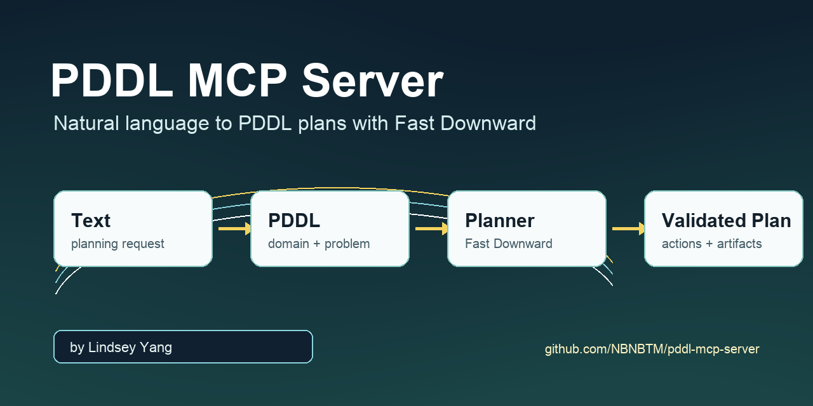
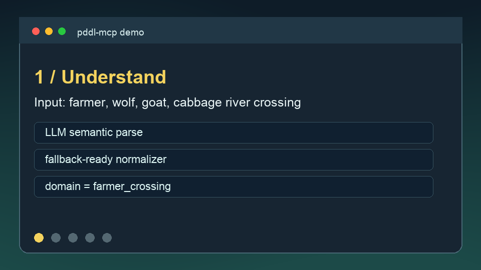

Semantic
LLM parsing when configured, deterministic fallback when unavailable.
MCP backend for automated planning
Convert planning requests into PDDL, run Fast Downward, validate the plan, and return artifacts through a stable MCP interface.

Quick Start
Use editable install for development, then configure Fast Downward and optional LLM credentials through local environment variables.
git clone https://github.com/NBNBTM/pddl-mcp-server.git
cd pddl-mcp-server
python -m pip install -e ".[dev]"
cp .env.example .env
python server.pyDemo
The workflow recognizes the domain, generates PDDL, calls Fast Downward, and returns a validated action sequence.
(cross-with goat left right)
(cross-alone right left)
(cross-with cabbage left right)
(cross-with goat right left)
(cross-with wolf left right)
(cross-alone right left)
(cross-with goat left right)
Architecture
LLM parsing when configured, deterministic fallback when unavailable.
Domain template matching from curated planning knowledge.
Domain and problem PDDL generation with saved artifacts.
Fast Downward command execution, log capture, and plan parsing.
MCP Tools
plan_from_text(text, options)
generate_plan(task)
validate_config()
get_system_info()
Configuration
Secrets stay in local `.env` files or deployment secrets. Generated output and local planner builds are ignored by Git.
FAST_DOWNWARD_PATH=/absolute/path/to/fast-downward.py
FAST_DOWNWARD_SEARCH=astar(blind())
LLM_API_URL=https://your-endpoint.example/chat
LLM_API_KEY=...
LLM_MODEL=qwen-max